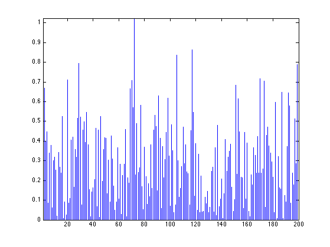
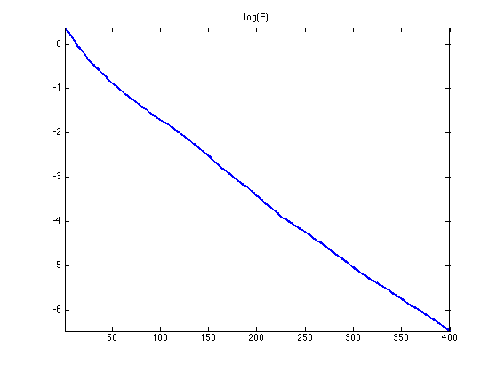
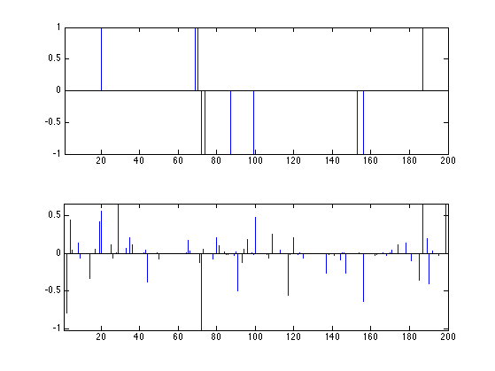
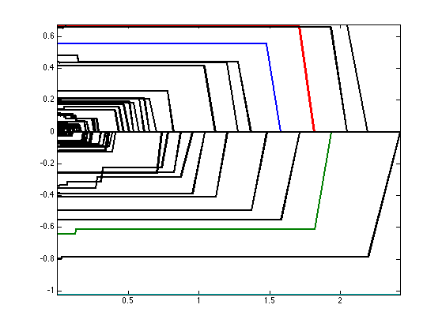
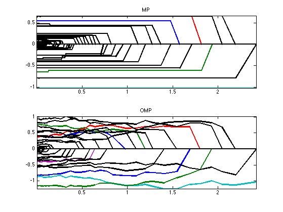
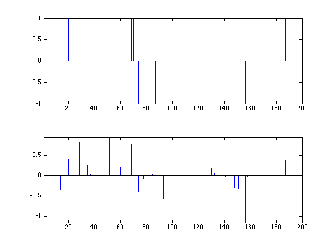

Matching Pursuits
This numerical tour explores the use of Matching Pursuits to solve sparse optimization problems..
Contents
Installing toolboxes and setting up the path.
You need to download the following files: signal toolbox and general toolbox.
You need to unzip these toolboxes in your working directory, so that you have toolbox_signal and toolbox_general in your directory.
For Scilab user: you must replace the Matlab comment '%' by its Scilab counterpart '//'.
Recommandation: You should create a text file named for instance numericaltour.sce (in Scilab) or numericaltour.m (in Matlab) to write all the Scilab/Matlab command you want to execute. Then, simply run exec('numericaltour.sce'); (in Scilab) or numericaltour; (in Matlab) to run the commands.
Execute this line only if you are using Matlab.
getd = @(p)path(p,path); % scilab users must *not* execute this
Then you can add the toolboxes to the path.
getd('toolbox_signal/'); getd('toolbox_general/');
Sparse Regularization
We consider the following linear inverse problem \[ y = \Phi x_0 + w \in \RR^P\] where \(x_0 \in \RR^N\) is the (unknown) signal to recover, \(w \in \RR^P\) is a noise vector, and \(\Phi \in \RR^{P \times N}\) models the acquisition device.
Size of the problem.
N = 200; P = round(N/4);
We consider here a simple compressed sensing scenario where the operator \(\Phi\) is a realization of a Gaussian random matrix.
Phi = randn(P,N);
For simplicity of the exposition of the algorithm, we normalize the columns of the operator.
Phi = Phi ./ repmat( sqrt(sum(Phi.^2)), [P 1] );
Sparsity of the input data.
s = round(P/5);
Sparse vector.
I = randperm(N); I = I(1:s); x0 = zeros(N,1); x0(I) = sign(randn(s,1));
Noise level.
sigma = 0.05 * norm(Phi*x0)/sqrt(P);
Measurements \(y=\Phi x_0 + w\).
y = Phi*x0 + sigma*randn(P,1);
In the following, we define the \(\ell^0\) pseudo-norm the counting measure \[ \norm{x}_0 = \abs{\enscond{i \in \{1,\ldots,N\}}{x_i \neq 0}}. \]
To recover an approximation of the signal \(x_0\), we use \(\ell^0\) sparse optimization, which requires to solve either the sparsity constraint problem \[ \umin{\norm{x}_0 \leq s} \norm{y-\Phi x}, \qquad \Ss(s) \] or the \(\ell^2\)-error constraint problem \[ \umin{\norm{y-\Phi x} \leq \epsilon} \norm{x}_0, \qquad \Ll(\epsilon) \] Note that these are non-convex optimization problems.
One needs to set-up either the sparsity parameter \(s \in \NN\) or the error contraint \(\epsilon \geq 0\). These parameters should be tuned in accordance to the noise level, and when there is not noise, \(w=0\), one should set \( \epsilon=0 \) and solve the problem \[ \umin{\Phi x = y} \norm{x}_0. \]
In the special case where \( \Phi \in \RR^{N \times N} \) is an orthogonal basis, i.e. \(N=P\) and \( \Phi \Phi^* = \text{Id}_N \), one can compute in closed form the solution to problems \((\Ss(s))\) and \((\Ll(\epsilon))\) using the hard thresholding operator \[ x = \Phi \circ S_T \circ \Phi^* (y) \qwhereq S_T(u)_i = \choice{ u_i \qifq \abs{u_i}>T, \\ 0 \quad \text{otherwise}. } \] where the threshold \(T \geq 0\) should be selected so that either \(\norm{x}_0=s\) or \( \norm{y-\Phi x}=\epsilon \).
In the general case howeve, both problems \((\Ss(s))\) and \((\Ll(\epsilon))\) are NP-hard to solve, see for instance:
S. Mallat and G. Davis, and M. Avelaneda, Adaptive Greedy Approximations, Jour. of Constructive Approximation, vol. 13, No. 1, pp. 57-98, 1997.
One thus needs to use alternative strategies to compute approximate solutions.
A first line of methods consists in replacing the \(\ell^0\) non-convex pseudo-norm by its natural convexification, the \(\ell^1\) norm. Other numerical tours are devoted to this class of methods.
Another line of method develop heuristic greedy optimization schemes, that are usually called Matching Pursuit algorithms. We describe here two of such methods.
Matching Pursuit
Matching pursuit is a greedy procedure that progressively identify the location of the spikes by looking at atoms that maximaly correlated with the current residual.
This algorithm is introduced in
S. Mallat and S. Zhang, Matching Pursuits With Time-Frequency Dictionaries, IEEE Transactions on Signal Processing, December 1993.
The algorithm is initialized with \(x^{(0)}=0\).
x = zeros(N,1);
The vector is updated from step \(\ell\) to step \(\ell+1\) as \[ x^{(\ell+1)} = x^{(\ell)} + \mu \] by adding a 1-sparse vector \(\mu\) that minimizes the error decay \[ \umin{\norm{\mu}_0 = 1} \norm{ y - \Phi (x^{(\ell)} + \mu) }. \]
This update is computed in closed form as \[ \mu = c_i \de_i \] where the correlation vector is \[ c = \Phi^* (y-\Phi x^{(\ell)}) \in \RR^N \] and where \(\de_i\) is the Dirac at position \(i\) that maximizes the absolute correlation \[ \umax{ i } \abs{c_i} \]
Compute the correlation.
c = Phi'*(y-Phi*x);
Display the correlation.
clf; stem( abs(c), 'b.' ); axis tight;
Extract the coefficient with maximal correlation
[~,i] = max(abs(c));
Update the coefficients
x(i) = x(i) + c(i);
Exercice 1: (check the solution) Perform the Matching pursuit. Record the evolution of the solution \(x^{(\ell)}\) as well as the maximum correlation \( \la^{(\ell)} = \abs{c_i} \). Display the decay of the error \( E(\ell) = \norm{y-\Phi x^{(\ell)}}. \)
exo1;
One can shows that the error \(\norm{y-\Phi x^{(\ell)}}\) converges toward zero when \(\ell\) increases.
Display the signal to recover and the signal recovered with a large number of iterations (thus corresponding to \(\epsilon=0\)). Note how the noise impacts the recovered vector.
clf; subplot(2,1,1); x1 = x0; x1(x1==0) = NaN; stem(x1, 'b.'); axis tight; subplot(2,1,2); x1 = x; x1(x1==0) = NaN; stem(x1, 'b.'); axis tight;
Display the evolution of each entry of \(x^{(\ell)}\) (different colors) with \(\norm{y-\Phi x^{(\ell)}}\). We display the evolution of the correct components (those indexed by the support \(I\) of \(x_0\)) in color, and the wrong components (indexed by \(J=I^c\)) in black.
clf; I = find(x0~=0); J = setdiff(1:N,I); clf; hold on; h = plot(E, X(I,:)', '-'); set(h, 'LineWidth', 2); h = plot(E, X(J,:)', 'k-'); set(h, 'LineWidth', 2); axis tight; box on;
Orthogonal Matching Pursuit
Orthogonal matching pursuit improves over matching pursuit by reducing the error using an orthogonal projection.
This algorithm is introduced in:
Y. Pati, R. Rezaiifar, P. Krishnaprasad, Orthogonal Matching Pursuit : recursive function approximation with application to wavelet decomposition, Asilomar Conf. on Signals, Systems and Comput., 1993
At an iteration \(\ell\) of the algorithm, one computes a standard MP step \[ \tilde x = x^{(\ell)} + \mu \] and the next iteration is computed by projecting \(\tilde x\) on the known support \[ x^{(\ell+1)} = \uargmin{ I(x)=I(\tilde x) } \norm{y-\Phi x} \] where \(I(x)\) is the support of the solution \[ I(x) = \enscond{ i \in \{1,\ldots,N\} }{ x_i \neq 0 }. \]
This \(\ell^2\) minimization can be solved in closed form as \[ x^{(\ell+1)}_I = \Phi_I^+ y \qwhereq A^+ = (A^*A)^{-1} A^* \qandq I = I(\tilde x), \] where we used the shorthand notation \(x_I = (x_i)_{i \in I} \in \RR^{\abs{I}}\) and \(\Phi_I \in \RR^{P \times \abs{I}}\) is the sub-matrix obtained by extracting from \(\Phi\) the columns indexed by \(I\).
Perform one step of matching pursuit.
c = Phi'*(y-Phi*x); [~,i] = max(abs(c)); x(i) = x(i) + c(i);
Perform \(\ell^2\) projection.
I = find(x~=0); x(I) = pinv(Phi(:,I))*y;
Note that the algorithm stops after \(P\) steps, providing a zero error, \(\Phi x^{(P)} = y\).
Exercice 2: (check the solution) Perform the Orthogonal Matching Pursuit algorithm, and compare it with the Matching Pursuit.
exo2;
Display the signal recovered by OMP.
clf; subplot(2,1,1); x1 = x0; x1(x1==0) = NaN; stem(x1, 'b.'); axis tight; subplot(2,1,2); x1 = x; x1(x1==0) = NaN; stem(x1, 'b.'); axis tight;